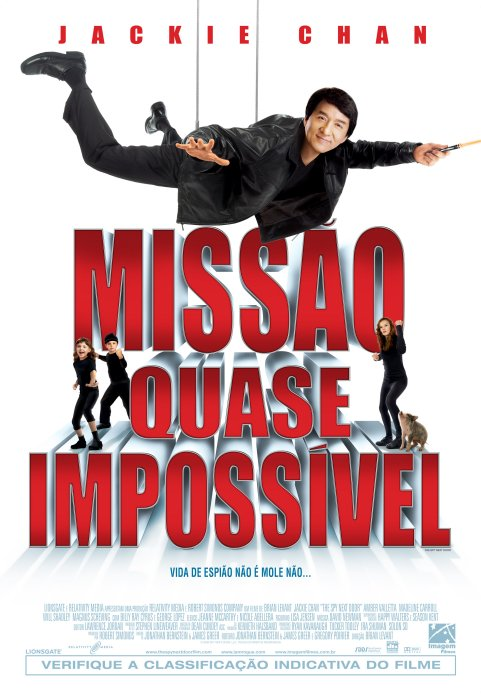

|  | Missão Quase Impossível
Direção: Brian Levant
Roteiro Jonathan Bernstein, Gregory Poirier
Elenco: Jackie Chan, Amber Valletta, Madeline Carroll
Bob, um espião da CIA, decide abandonar sua carreira para casar com sua namorada Gillian. Entretanto, Bob primeiro precisa cumprir uma última missão: conseguir a aprovação das crianças. Gillian precisa viajar e Bob acaba tomando conta das crianças para ela. Porém uma das crianças, acidentalmente, faz o download de uma fórmula secreta e acaba revelando o paradeiro de Bob para um terrorista russo que está atrás dele. |
|
Acesse mais em YouTube SESSÕES
|